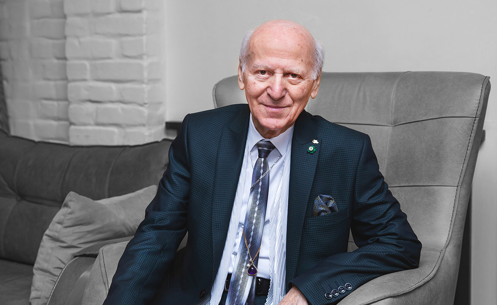

Шалва Александрович Амонашвили
Шалва Амонашвили родился в 1931 году в г. Тбилиси (Грузия). С детства он любил писать стихи, пьесы, философские эссе, ставить спектакли. Сначала со школой и учителями у Шалвы Амонашвили складывались непростые отношения. Как говорит сам Шалва Амонашвили, пройдя через руки своих учителей, педагогом он становиться не собирался. Его влекла журналистика, но он не успел подать свои документы на этот факультет: все места для медалистов были уже заняты. Для того чтобы осуществить свою мечту, он подал документы на факультет востоковедения.